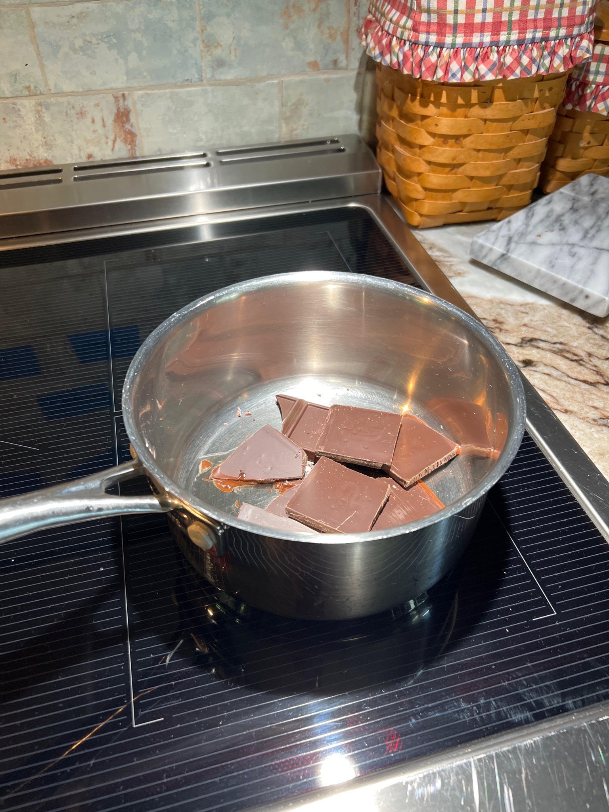
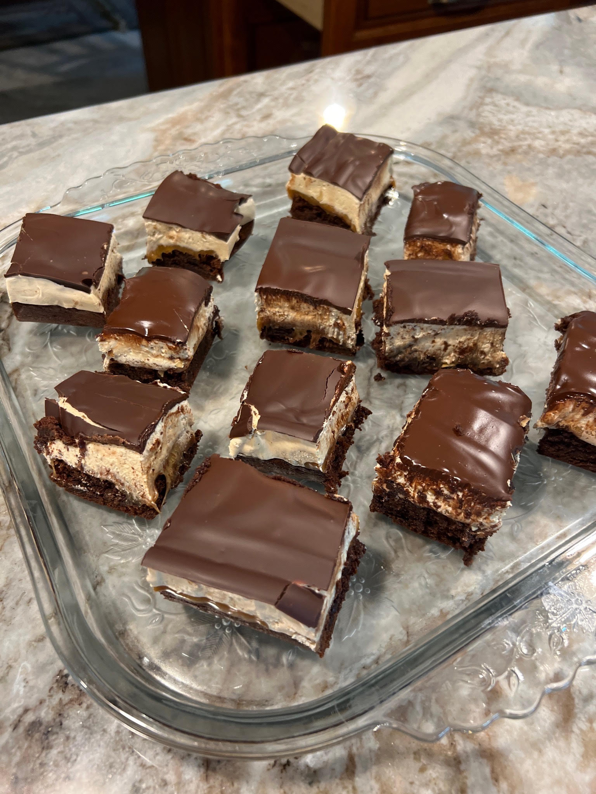

Snicker Brownie Bars
INGREDIENTS
For the Brownies
• 4 ounces (113 g) unsweetened chocolate
• ½ cup (113 g) unsalted butter, cut into pieces
• 3 tablespoons unsweetened cocoa powder
• 3 large eggs, room temperature
• 1 ¾ cups (367 g) light brown sugar, packed
• 1 Tablespoon vanilla extract
• ½ teaspoon salt
• 1 cup (130 g) all-purpose flour
• 1/2 teaspoon baking powder
For the caramel layer
• 1 ½ cups (280 g) caramel bits, or unwrapped caramels squares
• 3 Tablespoons evaporated milk
For the nougat layer
• 1 ½ cups (150 g) marshmallow fluff up
• 5 tablespoons (81 g) crunchy peanut butter, or creamy peanut butter
• 1 cup (200 g) granulated sugar
• ½ cup (120 ml) evaporated milk
• 5 tablespoons (70 g) unsalted butter
For the chocolate layer
• 6 ounces (170 g) semisweet chocolate, finely chopped
• 1 tablespoon olive oil
• INSTRUCTIONS
Make the brownie layer
• Preheat the oven to 350ºF. Line a 9-inch square pan with parchment, leaving a 1-inch overhang on all sides. I put something in the pan to hold the parchment paper down. Remove items before adding the brownie batter.
<
• Add the chocolate and butter to a medium heatproof bowl set over a pot of simmering water. Stir occasionally until fully melted and smooth. Whisk in the cocoa powder until smooth. Set aside to cool slightly. You will want to dry the bottom of the bowl so the water condensation doesn’t run into your batter.

• In a separate medium bowl, whisk together the eggs, sugar, and vanilla, mix until combined. Fold with a rubber spatula into the melted chocolate until all combined. Fold in the flour with a rubber spatula just until combined.
• Spread the batter evenly into the bottom of the prepared pan. Bake for 25 minutes, or until the top of the brownies look dry and the edges begin to pull away from the sides of the pan. Set on a wire rack to cool completely.
Make the caramel layer
• In a medium saucepan combine the caramels and evaporated milk. Heat on medium heat until the caramels have completely melted. Spread evenly over the top of the brownie layer. Allow the caramel to cool for 15 minutes before making the nougat layer.
• Make the nougat layer
• In a medium metal bowl, combine the marshmallow fluff and peanut butter. Set aside.
• In a small nonstick saucepan, combine the sugar, evaporated milk, and butter. Bring to a boil over medium-high heat, whisking constantly. Turn the heat down to medium and continue to boil at a moderate rate while whisking constantly for 5-8 minutes. If the mixture turns dark in color, you’ve boiled it for too long. It should be light in color and the consistency of sweetened condensed milk.
• Slowly pour the hot sugar mixture into the marshmallow fluff and peanut butter. Stir until well combined.
• Spread the nougat layer evenly over the top of the caramel layer. Allow the nougat to cool for 20 minutes before making the chocolate layer.
Start of the boiling.
After eight minutes boiling on medium heat.
Pour into the marshmallow and peanut butter mixture mix until til smooth. Turns into nougat.
Pour over the Carmel brownies.
Make the chocolate layer
• In a medium saucepan combine the chocolate and oil. Heat on medium heat, stirring well until the chocolate is melted and smooth.
• Spread the chocolate evenly over the top of the nougat layer. Refrigerate for 30 minutes. Lift the brownies out of the pan by the foil overhang and cut them into bars. Allow brownies to come to room temperature before serving.
